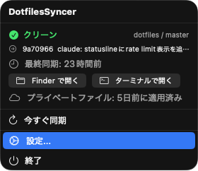

Gitリポジトリの自動同期と、プライベートファイルのiCloud配布。 開発環境を常に最新に保ちます。

手動 pull が面倒
別マシンで変更したのに、もう一方で git pull するのを忘れて環境がズレる
公開できないファイルがある
GitHub Actions が無料で使えるので public リポジトリにしたいけど、APIトークンや個人設定は入れられない
同期の状態がわからない
最後にいつ pull したか覚えてない。リモートに差分があるのかも見えない
アイコンの形だけで同期状態が一目でわかります。
APIトークンや個人設定など、public リポジトリに入れられないファイルを
iCloud Drive 経由で全マシンに自動配布。
ファイルの実体は iCloud Drive/DotfilesSyncer/ に保存されるため、
Files アプリから直接確認・バックアップも可能です。
~/dotfiles/.api-keys~/dotfiles/.work
Mac App Store からダウンロード。¥100 の買い切り、サブスクなし。
dotfiles リポジトリのローカルパスを選択するだけ。
バックグラウンドで定期 fetch。差分があれば通知、または自動 pull。